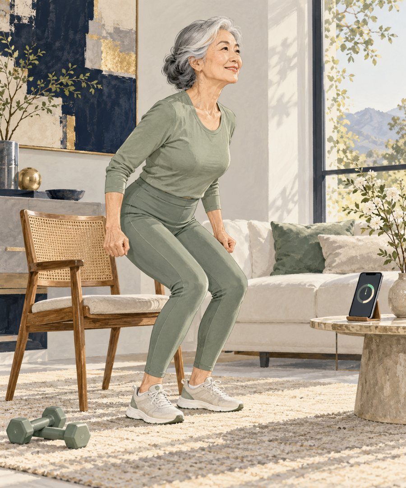
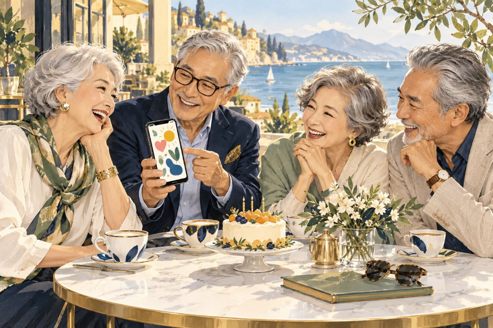
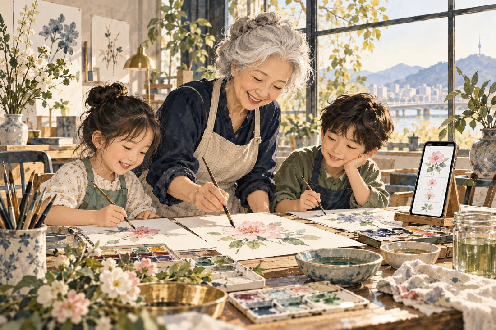

2027
목표의 해
브라이언 존슨이 2025년 1월 '1년에 1년'을 인류의 목표로 내걸며 말한 해입니다. 예측이 아니라 목표예요.1
뉴그레이를 위한 AI 웰에이징 클래스
치매·당뇨·고혈압 걱정만 하던 노후에서, 100세에도 하고 싶은 일을 계속하는 삶으로. 이미 가진 휴대폰에 말로 부탁하며 몸·뇌·관계·멋·의미, 다섯 가지를 함께 설계합니다.
INSIGHT
'2027년부터 수명이 1년에 1년씩 는다'는 말, 들어 보셨나요? 정확히 알고 나면 할 일이 더 분명해집니다.
2027
브라이언 존슨이 2025년 1월 '1년에 1년'을 인류의 목표로 내걸며 말한 해입니다. 예측이 아니라 목표예요.1
2032
미래학자 커즈와일이 최근 말하는 '수명 탈출 속도' 시점입니다. 2024년엔 2029년이라 했고, 조건은 늘 건강 관리에 부지런한 사람이에요.2
2.3개월
최근 10년 한국인 기대수명이 1년마다 늘어난 폭입니다. '1년에 1년'까지는 약 5배가 더 필요해요.3
18.2년
기대수명 83.7세와 건강수명 65.5세 사이, 질병과 함께 사는 시간입니다(2024년).3
30초 놀이
태어난 해를 고르면, 그날 내 나이와 100세 생일이 나옵니다. 그리고 그날에도 하고 싶은 일 3가지를 골라 보세요.
예측은 예측일 뿐이에요. '그날까지 건강하게'를 상상해 보는 놀이입니다.
100세에도 이것만은 계속하고 싶다 0/3
REFRAME
치매·당뇨·고혈압은 명사입니다. 우리가 100세까지 지키고 싶은 건 동사예요.
그런데, 치매의 약 45%는 바꿀 수 있는 14가지 위험 요인과 관련이 있습니다.8
그중 가장 큰 두 가지가 청력과 LDL 콜레스테롤(각 7%), 그다음이 사회적 고립(5%)이에요. 보청기와 안경, 그리고 친구도 뇌 건강 목록에 있다는 뜻입니다. 개인에 대한 보장이 아니라 확률의 이야기라서, 매일의 습관이 중요합니다.
100세 인생 OS
휴대폰에 운영체제(OS)가 있듯, 100세 인생에도 다섯 가지 운영체제가 있어요. 하나씩 AI와 함께 업그레이드합니다.

뇌 OS
60~90세 221명이 14주 동안 새롭고 어려운 기술을 배웠더니, 편한 친목 활동보다 기억력이 더 좋아졌어요.9
"일본어로 커피 주문하는 한 문장 알려 주고, 내 발음 고쳐 줘."

관계 OS
미국 공중보건국장은 사회적 연결 부족이 사망 위험에 미치는 영향을 '하루 최대 15개비 흡연'과 비슷하다고 했어요.10
"생일인 친구에게 보낼 카드 문구 3개. 같이 걷자는 약속도 넣어서."
멋 OS
뉴그레이는 늙지 않으려는 사람이 아니라, 나답게 나이 드는 사람입니다. 멋은 외출을 부르고, 외출은 걷기와 만남을 부르죠.
"흰머리가 잘 어울리는 옷 색 3가지와 동창 모임 차림 추천해 줘."

의미 OS
50세 이상 6,985명을 살펴보니, 삶의 목적이 가장 약한 집단은 가장 강한 집단보다 사망 위험이 2.43배 높았어요(관찰 연구).12
"키케로가 되어 '노년은 즐거울 수 있는가' 쉽게 설명해 줘."
LIVE DEMO
타자를 몰라도 괜찮아요. 카카오톡 안의 ChatGPT나 갤럭시 Gemini에 말하듯 부탁하면 됩니다. 수업에서는 이걸 직접 해 봅니다.
화면의 답은 실제 수업 시연을 바탕으로 다듬은 예시예요. AI 답은 매번 조금씩 달라요. 건강 관련 답은 의료진에게 다시 확인하세요.
ONLY HERE
장례식이 아니라 100세 생일 파티를 미리 설계합니다. 초대할 다섯 사람, 그날 내가 직접 할 일 세 가지.
둘이 한 조가 되어 4주 동안 "오늘 했어요" 한 줄을 주고받습니다. 관계 OS가 수업 안에 들어 있어요.
근력 루틴, 냉장고 저녁, 외국어 한 문장, 친구 카드, 진료 전 질문 메모까지. 그대로 말하면 되는 문장 카드.
마지막 날, AI가 골라 준 색으로 차려입고 프로필 사진을 찍습니다. 4주 전후 '동사 기록'과 함께.
COURSES
첫 걸음
무료
특강 신청두 번째 걸음
참가비는 특강에서 안내
대기 신청플래그십
참가비는 특강에서 안내
대기 신청TEACHER
"저는 의사가 아닙니다. 그래서 진단하지 않습니다. 대신 같은 60대로서, 매일 곁에 둘 AI를 안전하게 쓰는 법을 함께 연습합니다."
생활을 기록하고 정리하는 수업입니다. 병을 고친다고 말하지 않아요.
병명·복용약·검사 수치는 묻지도 적지도 않습니다. 실습은 내 휴대폰 안에서만.
AI의 건강 답은 출처를 확인하고 의사·약사에게 다시 여쭤보는 법까지 배웁니다.
의자 실습은 원하는 분만, 보조자와 함께. 불편하면 보기만 하셔도 됩니다.
FOR ORGANIZATIONS
고객 초청 세미나의 '건강 1부', 입주민 문화 강연, 생애설계 교육에 그대로 넣을 수 있게 만들었습니다.
'건강 1부' 90분 인사이트 특강. 숫자 4개와 라이브 시연, 100세 생일 초대장.
월례 명사 강연 90분, 또는 입주민 4주 과정.
원데이 「100세 설계도」 3시간, 또는 4회 강좌.
퇴직 예정자 대상 '건강·관계' 모듈 3시간.
APPLY
1분이면 됩니다. 일정이 정해지면 문자로 먼저 알려 드려요.
네. 갤럭시든 아이폰이든 카카오톡이 되면 시작할 수 있어요. 타자를 몰라도 말로 부탁하는 법부터 같이 합니다.
아니요. 이 수업은 진단이나 처방을 하지 않습니다. 생활을 기록하고 정리하는 법, 진료 전에 질문을 준비하는 법, AI의 답을 의료진에게 다시 확인하는 법을 배웁니다.
그럼요. 의자 실습은 원하는 분만 하고, 보기만 하셔도 됩니다. 운동 제한을 받으셨다면 의료진 말씀이 먼저예요.
오히려 좋아요. 이 수업에는 '100세 짝꿍' 제도가 있어서, 둘이 함께 오시면 4주 동안 서로 응원하기 쉽습니다.
신청서에서 '부모님께 선물해요'를 고르고 부모님 성함과 연락처를 적어 주세요. 부모님께 직접 안내 전화를 드립니다.
인사이트 특강은 무료입니다. 원데이와 4주 과정 참가비는 특강에서 먼저 안내해 드리고, 신청은 그 뒤에 결정하시면 돼요.
아무도 모릅니다. 커즈와일 같은 낙관론도, 기대수명 증가가 느려지고 있다는 신중론도 있어요. 그래서 이 수업은 예측이 아니라 준비에 집중합니다. 어느 쪽이든 건강하게 도착하는 사람이 이기니까요.